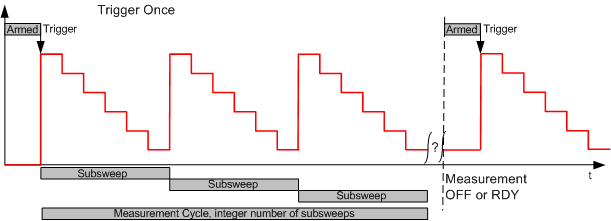
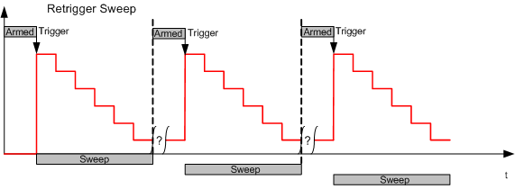
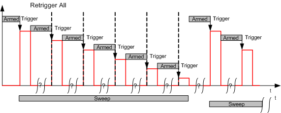
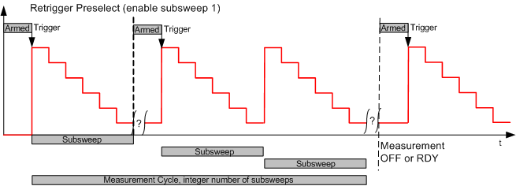

The I/Q vs. slot measurement can be performed in "Free Run" (untriggered) mode. However, a power trigger ("Trigger Source: IF Power") is often suitable, in particular if the measurement has to be synchronized to a sequence of power steps. The R&S CMW provides alternative trigger modes for RF input signals with different characteristics.
The measurement is triggered once. All the following evaluation intervals are calculated according to the "Step Length" and the "Measurement Length" settings. The trigger event starts an entire measurement cycle, comprising the selected number of steps and subsweeps. The trigger is rearmed only after the measurement is stopped and restarted.
This mode is recommended for signals where all steps (including possible repetitions for statistics) are within the "Step Length".

The measurement starts after the first trigger event and continues according to the "Step Length" and the "Measurement Length" settings until a sweep is completed. A new trigger event resynchronizes the measurement and starts the next sweep.
This mode is recommended for signals where all steps within one sweep are within the "Step Length" but the time gap between the sweeps is not precise. This mode is also recommended for high statistic counts where retriggering can compensate for a possible time drift of the DUT.

Similar to "Retrigger Sweep", but the trigger is rearmed at each power/frequency step. This mode is recommended for steps with unknown or irregular distances.

Similar to "Retrigger All", but the trigger is rearmed only at some preselected power steps. The sweep is subdivided into a sequence of continuously measured subsweeps. The trigger is rearmed at each subsweep. The whole retrigger pattern is repeated for each sweep.
This mode is a compromise between "Retrigger Sweep" and "Retrigger All". It is also recommended if the conditions for "Retrigger All" apply but no trigger signal is available for each step.
